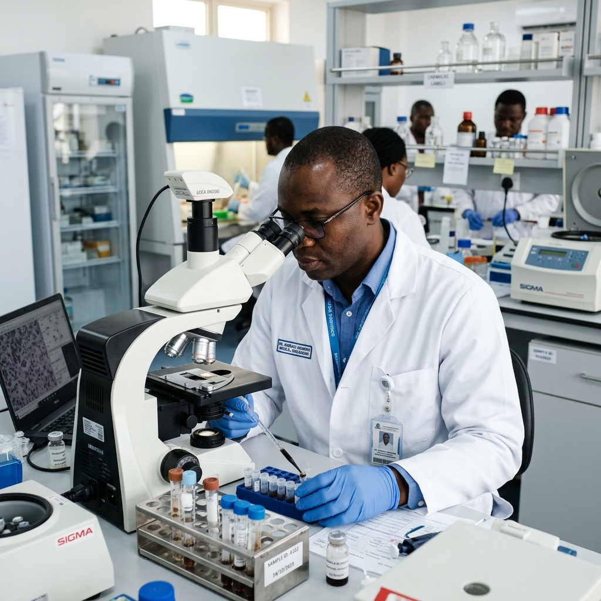

Laboratoire
DAVYCAS International accompagne le renforcement des laboratoires à travers l’appui stratégique, l’opérationnalisation de systèmes, la traçabilité des échantillons et l’amélioration des plateaux techniques.

Un appui stratégique et opérationnel aux laboratoires
Dans le domaine du laboratoire, DAVYCAS International intervient à plusieurs niveaux au Burkina Faso et accompagne les institutions sanitaires dans le renforcement du leadership, des systèmes de référence, de la traçabilité des échantillons et des capacités techniques.
Au niveau stratégique
DAVYCAS International, grâce aux financements de ses partenaires, apporte un appui technique et financier au fonctionnement du groupe de travail laboratoire, notamment le Laboratory Technical Working Group. Cet appui contribue au renforcement du leadership des structures nationales du niveau central et à la clarification de leurs rôles et missions.
Au niveau opérationnel
DAVYCAS International intervient dans la mise en place et l’opérationnalisation de dispositifs concrets pour le transport des échantillons biologiques, la traçabilité, la gestion des informations de laboratoire et l’amélioration des capacités techniques.
Des interventions concrètes pour renforcer les capacités de laboratoire
Transport des échantillons biologiques
Appui à la mise en place et à l’opérationnalisation du Système Intégré de Transport des Échantillons Biologiques avec les partenaires logistiques, notamment La Poste Burkina Faso.
Découvrir SITEBTraçabilité et information de laboratoire
Mise en place de systèmes de traçabilité des échantillons biologiques et de gestion des informations de laboratoire en lien avec les données de surveillance épidémiologique.
Découvrir STELabAmélioration des plateaux techniques
Contribution à l’amélioration des laboratoires nationaux par l’appui en équipements spécifiques, consommables et réactifs adaptés aux besoins des programmes de surveillance.
Surveillance sentinelle et études spécifiques
Appui aux laboratoires dans le cadre de la surveillance sentinelle des arboviroses, des infections respiratoires aiguës sévères et d’études spécifiques comme le portage des germes méningés.
Des équipements au service de la performance des laboratoires
DAVYCAS contribue à renforcer les capacités des laboratoires à travers la fourniture ou l’appui à l’acquisition d’équipements et de matériels essentiels.
Relier les données de laboratoire à la surveillance épidémiologique
Les interventions de DAVYCAS visent à créer un lien opérationnel entre les laboratoires, les systèmes d’information sanitaire et les données de surveillance épidémiologique. Cette approche permet une meilleure remontée des informations, une traçabilité plus fiable et une prise de décision plus rapide.

Collecte et réception des échantillons
Analyse, conformité et validation
Intégration des données dans les systèmes de surveillance
Des produits DAVYCAS au service des laboratoires

STELab
Solution digitale de traçabilité des données épidémiologiques et des échantillons de laboratoire.
Découvrir STELab
SITEB
Système intégré de transport des échantillons biologiques pour sécuriser la chaîne terrain-laboratoire.
Découvrir SITEBRenforcer les laboratoires pour renforcer la décision sanitaire
Leadership national renforcé
Échantillons mieux tracés
Données mieux intégrées
Plateaux techniques améliorés
Vous souhaitez renforcer vos capacités de laboratoire ?
DAVYCAS International accompagne les institutions sanitaires dans la structuration, l’opérationnalisation et la modernisation des dispositifs de laboratoire, de surveillance et de transport des échantillons biologiques.